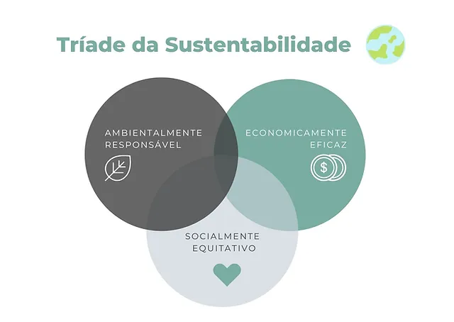
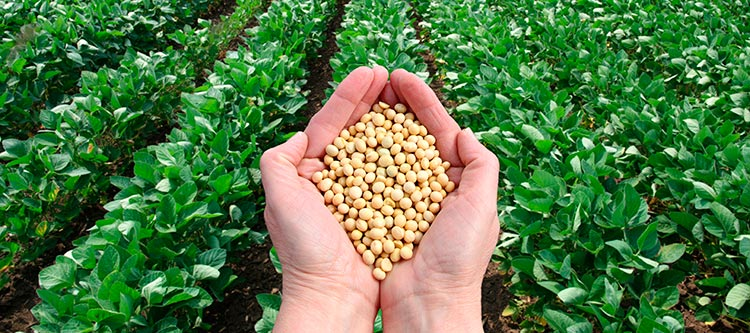
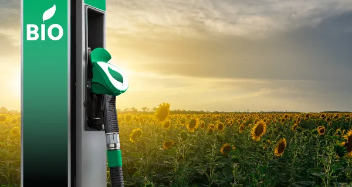

Pilares da sustentabilidade

A sustentabilidade se baseia em tres pilares o Economico, o Social e o ambiental : A sustentabilidade vai muito além da preservação ambiental ela se entrelaça nos aspectos socias e economicos da sociedade de forma que
- Economico: Como vimos na história, os momentos de crise levam a relegar para segundo plano os problemas ambientais e sociais, erroneamente considerados como “questões menos urgentes”. O caminho do desenvolvimento sustentável inclui a capacidade de investir em medidas que nos permitam atingir esses objetivos, pelo que a capacidade de ser economicamente eficiente
- Social: Deverá promover igualdade de direitos e oportunidades para todos, que conduza um maior equilíbrio e justiça na distribuição da riqueza e o acesso aos recursos e serviços essenciais para uma vida digna, como a educação, saúde, alimentação e habitação, em alinhamento com os Direitos Humanos.
- Ambiental: Só poderemos estar perante um “desenvolvimento sustentável”, quando as sociedades conseguirem prosperar em conjunto com a natureza e não à conta da mesma. Para isso, devemos desenvolver novas formas de atuação que respeitem os limites do nosso planeta e que não impliquem a degradação dos sistemas naturais e a redução da biodiversidade. Sendo nós parte integrante dos sistemas naturais, a sua degradação implica a nossa degradação, logo, de modo a assegurarmos a nossa continuidade, devemos quebrar a postura destrutiva assumida nas últimas décadas, procurando novos caminhos que nos permitam “fazer bem” ao invés de nos contentarmos em “fazer menos mal”.
Biocombustiveis

Simplificadamente, biocombustível é qualquer combustível obtido a partir de biomassa vegetal ou animal, ou seja, de toda matéria-prima não mineral. Destacam-se o etanol, ou álcool etílico, e o biodiesel.
Questoẽs importantes do biocombustivel
- Oportunidades socioeconômicas: apresentam relevância socioeconômica, empregando elevado contigente de mão-de-obra em toda a cadeia produtiva, desde o campo, passando pelo processamento industrial e finalizando com a distribuição aos consumidores;.
- Vantagens ambientais: demonstram amplas vantagens ambientais, pois por serem combustíveis de origem vegetal, consomem, durante o crescimento das lavouras, o dióxido de carbono expelido pela sua queima nos motores, ou seja, o balanço de CO2 é bastante favorável; adicionalmente, seu uso pelos diferentes motores promove a liberação de gases muito menos nocivos que aqueles produzidos pela queima da gasolina e do óleo diesel, quer seja do ponto de vista quantitativo, quer seja qualitativamente;
- Vantagem nacional: possui um enorme apelo estratégico, já que a detenção do poder de produzir um combustível alternativo àqueles advindos do petróleo confere ao Brasil um poderoso potencial de autossuficiência frente aos combustíveis fósseis, considerados os grandes vilões do aquecimento global verificado ao longo do último século e que, hoje, causa efeitos já considerados devastadores ao planeta (degelo das calotas polares, por exemplo). (informações retiradas de site de referencia)
Tipos de biocombustiveis nacionais

- biodiesel: O biodiesel é um combustível renovável obtido a partir de um processo químico denominado transesterificação. Por meio desse processo, os triglicerídeos presentes nos óleos e gordura animal reagem com um álcool primário, metanol ou etanol, gerando dois produtos: o éster e a glicerina. O primeiro somente pode ser comercializado como biodiesel, após passar por processos de purificação para adequação à especificação da qualidade, sendo destinado principalmente à aplicação em motores de ignição por compressão (ciclo Diesel). A sua mistura ao diesel fóssil teve início em 2004, em caráter experimental e, entre 2005 e 2007, no teor de 2%, a comercialização passou a ser voluntária. A obrigatoriedade veio no artigo 2º da Lei n° 11.097/2005, que introduziu o biodiesel na matriz energética brasileira. Em janeiro de 2008, entrou em vigor a mistura legalmente obrigatória de 2% (B2), em todo o território nacional. Com o amadurecimento do mercado brasileiro, esse percentual foi sucessivamente ampliado pelo CNPE.
- etanol O etanol é uma substância química com fórmula molecular C2H6O, produzida especialmente via fermentação de açúcares. É um biocombustível utilizado em motores de combustão interna com ignição por centelha (Ciclo Otto) em substituição especialmente à gasolina e em contraponto a outros combustíveis fósseis. O Brasil é pioneiro na utilização em larga escala de etanol combustível desde o fim da década de 1970. Atualmente, é um dos que mais utilizam o produto e ainda o segundo maior produtor mundial. São duas as formas de utilização do produto: na forma de etanol anidro, como componente de mistura na formação da gasolina C; ou como etanol hidratado, comercializado em todo o país como um combustível acabado. Para evitar a fraude conhecida como "álcool molhado", o etanol anidro recebe corante laranja, que só podem ser adquiridos pelos agentes regulados específicos e devem ser registrados junto à ANP.
- Biocombustivel na aviação: Os querosenes de aviação alternativo são os chamados querosenes parafínicos sintetizados (SPK em inglês) que são obtidos pelos processos de: hidrotratamento de óleos vegetais, fermentação de açucares, Fisher-Tropsch de carvão ou biomassa, e oligomerização de álcoois. Todos esses processos quando utilizam matéria-prima puramente renovável, os querosenes obtidos são denominados bioquerosene de aviação. (informações retiradas de site de referencia)